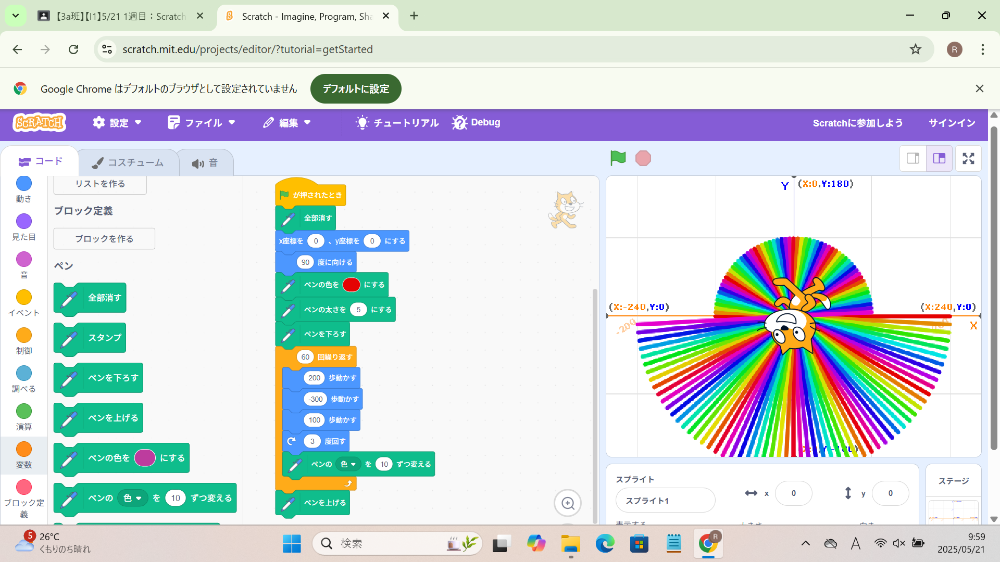

1週目のレポート ： 公大高専１年実習I-1
3a班9番 m
第1週目
1-1 サイエンスアート

1.内容
「ペンを下ろす」「ペンを上げる」「ペンの色を変える」などのブロックを使い、線や模様を描いた。
また、「〇回繰り返す」「ずっと」「◯度回す」などのブロックを上手く組み合わせることで様々な模様を描くことができた。
2.感想
プログラムを使って模様を描いたのが新鮮で楽しかった。
また、くり返しや角度、数値の工夫で素敵な模様ができたときは、とても気持ちが良く嬉しかった。
1-2 ゲーム
1.内容
乱数ブロックを使い、リンゴを上から落とすときにX座標をランダムな位置にすることで、毎回ちがう場所に落ちるようにした。
また、変数ブロックを使って点数を管理し、リンゴをキャッチすると点数が1ずつ増えるようにした。
2.感想
リンゴをランダムに落としたり、スプライトがキャッチしたときに点数が入るしくみを作ったりすることで、本物のゲームに近い動きを自分で作れることに驚き、同時に嬉しかった。
1-3 ホームページ作成
私のホームページ
1.内容
GitHubを活用してホームページを作成した。
また、GitHub Pagesを活用することで、自分の作成したホームページをインターネット上に公開できた。
2.感想
GitHub Pagesを使って自分のページを公開したとき、「自分の作ったものが世界に発信された」という実感が湧き、とても嬉しくなった。
また、もっと複雑なホームページも作成したいなと思った。
各ページへのリンク
1週目のレポート
2週目のレポート
3週目のレポート
私のホームページ